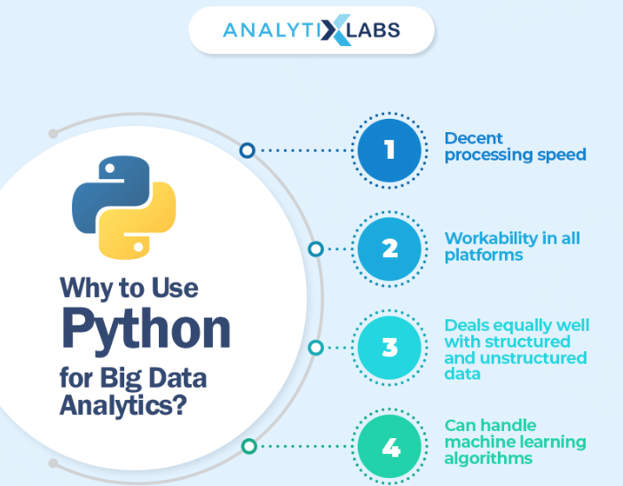

This course will give students an overview of the issues related to the management of unstructured data, i.e. data not stored in a table or database. Sources of unstructured data include bodies of text, social media applications, images, and audio. In the process of exploring various forms of unstructured data, students will be exposed to new programming languages and tools that are useful for managing this type of data (e.g. Python and bash). Other topics covered in the course include web scraping, natural language processing, and manipulating images/videos/audio files. Prerequisites: DSCI 210 - Data Science and CS 234 - Algorithms and Problem-Solving I, or instructor permission. Grade or P/NC. Offered alternate years.
